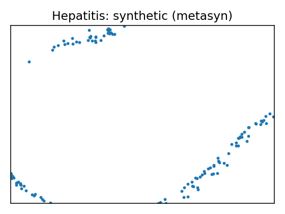
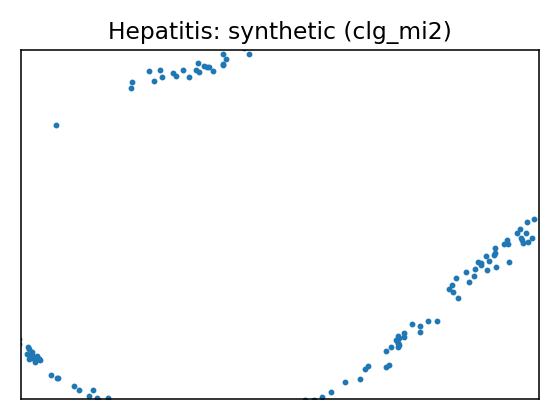
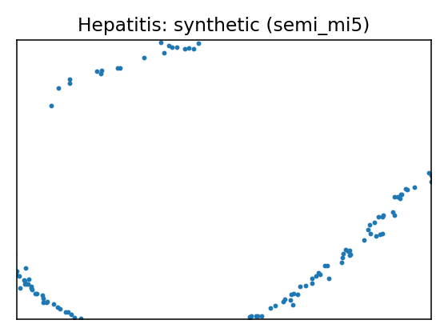
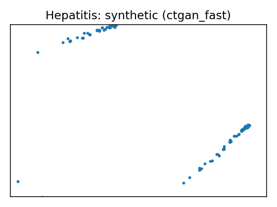
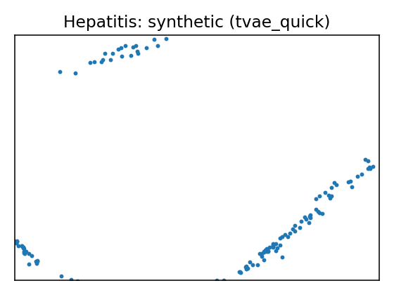
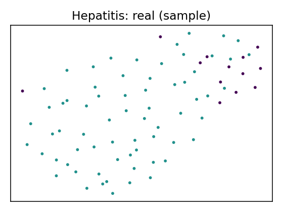

Data Report — Hepatitis
Source: UCI dataset 46
SemMap JSON-LD: dataset.semmap.json · RDFa HTML
Overview
| Metric | Value |
|---|---|
| Dataset | Hepatitis |
| Source | UCI dataset 46 |
| Rows | 80 |
| Columns | 20 |
| Discrete | 14 |
| Continuous | 6 |
| SemMap | SemMap JSON-LD SemMap HTML |
| Missingness | Not modeled |
Variables and summary
| variable | inferred | dist |
|---|---|---|
| Age | continuous | 40.6625 ± 11.2800 [20, 32, 38.5, 49.25, 72] |
| Sex | discrete | 1: 69 (86.25%) |
| Steroid | discrete | 1: 38 (47.50%) |
| Antivirals | discrete | 1: 21 (26.25%) |
| Fatigue | discrete | 1: 52 (65.00%) |
| Malaise | discrete | 1: 31 (38.75%) |
| Anorexia | discrete | 1: 12 (15.00%) |
| Liver Big | discrete | 1: 13 (16.25%) |
| Liver Firm | discrete | 1: 38 (47.50%) |
| Spleen Palpable | discrete | 1: 15 (18.75%) |
| Spiders | discrete | 1: 25 (31.25%) |
| Ascites | discrete | 1: 12 (15.00%) |
| Varices | discrete | 1: 10 (12.50%) |
| Bilirubin | continuous | 1.2212 ± 0.8752 [0.3, 0.7, 1, 1.3, 4.8] |
| Alk Phosphate | continuous | 102.9125 ± 53.6848 [26, 68.25, 85, 133.5, 280] |
| Sgot | continuous | 82.0250 ± 71.6000 [14, 30.75, 56.5, 102.75, 420] |
| Albumin | continuous | 3.8438 ± 0.5763 [2.1, 3.5, 4, 4.2, 5] |
| Protime | continuous | 62.5125 ± 23.4278 [0, 46, 62, 77.25, 100] |
| Histology | discrete | 1: 47 (58.75%) |
| Class | discrete | 1: 13 (16.25%) |
Fidelity summary
| umap | model | backend | disc jsd mean | disc jsd median | cont ks mean | cont w1 mean | downstream sign match |
|---|---|---|---|---|---|---|---|
 |
metasyn | metasyn | 0.1294 | 0.1524 | 0.1977 | 8.8017 | 0.64 |
 |
clg_mi2 | pybnesian | 0.1362 | 0.1411 | 0.2325 | 11.5322 | |
 |
semi_mi5 | pybnesian | 0.1273 | 0.1378 | 0.1912 | 9.5664 | |
 |
ctgan_fast | synthcity | 0.261 | 0.205 | 0.8877 | 46.3285 | |
 |
tvae_quick | synthcity | 0.1585 | 0.1439 | 0.3241 | 13.0605 |
Privacy summary
| model | backend | n real | n synth | exact overlap rate | near duplicate rate eps | nn distance mean | k min | k pct lt5 | k map | rare qi reproduction rate | identifiability score | delta presence |
|---|---|---|---|---|---|---|---|---|---|---|---|---|
| metasyn | metasyn | 80 | 155 | 0 | 0.8625 | 0.1294 | 1 | 1 | 6 | 0 | 1.4 | |
| clg_mi2 | pybnesian | 80 | 155 | 0 | 0.9375 | 0.0909 | 1 | 1 | 8 | 0 | 1.8182 | |
| semi_mi5 | pybnesian | 80 | 155 | 0 | 0.8625 | 0.1206 | 1 | 1 | 4 | 0 | 1.5217 | |
| ctgan_fast | synthcity | 80 | 155 | 0 | 0.3875 | 0.2962 | 1 | 1 | 6 | 0 | 5 | |
| tvae_quick | synthcity | 80 | 155 | 0 | 0.925 | 0.1192 | 1 | 1 | 1 | 0 | 6 |
Models
| UMAP | Details | Structure | |||||||||||||||||||||||||||||||||||||||||||||||||||||||||||||||||||||||||||||||||||||||||||||||||||||||||||||||||||||||||||||
|---|---|---|---|---|---|---|---|---|---|---|---|---|---|---|---|---|---|---|---|---|---|---|---|---|---|---|---|---|---|---|---|---|---|---|---|---|---|---|---|---|---|---|---|---|---|---|---|---|---|---|---|---|---|---|---|---|---|---|---|---|---|---|---|---|---|---|---|---|---|---|---|---|---|---|---|---|---|---|---|---|---|---|---|---|---|---|---|---|---|---|---|---|---|---|---|---|---|---|---|---|---|---|---|---|---|---|---|---|---|---|---|---|---|---|---|---|---|---|---|---|---|---|---|---|---|---|---|
 |
Real data | ||||||||||||||||||||||||||||||||||||||||||||||||||||||||||||||||||||||||||||||||||||||||||||||||||||||||||||||||||||||||||||||
Model: metasyn (metasyn)
Per-variable fidelity
Downstream metrics
Privacy metrics
|
| ||||||||||||||||||||||||||||||||||||||||||||||||||||||||||||||||||||||||||||||||||||||||||||||||||||||||||||||||||||||||||||||
Model: clg_mi2 (pybnesian)
Per-variable fidelity
Privacy metrics
|
 | ||||||||||||||||||||||||||||||||||||||||||||||||||||||||||||||||||||||||||||||||||||||||||||||||||||||||||||||||||||||||||||||
Model: semi_mi5 (pybnesian)
Per-variable fidelity
Privacy metrics
|
 | ||||||||||||||||||||||||||||||||||||||||||||||||||||||||||||||||||||||||||||||||||||||||||||||||||||||||||||||||||||||||||||||
Model: ctgan_fast (synthcity)
Per-variable fidelity
Privacy metrics
|
 | ||||||||||||||||||||||||||||||||||||||||||||||||||||||||||||||||||||||||||||||||||||||||||||||||||||||||||||||||||||||||||||||
Model: tvae_quick (synthcity)
Per-variable fidelity
Privacy metrics
|
|